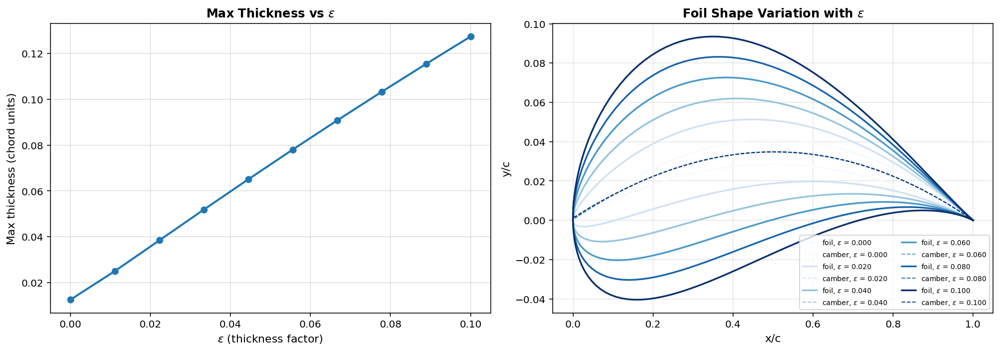
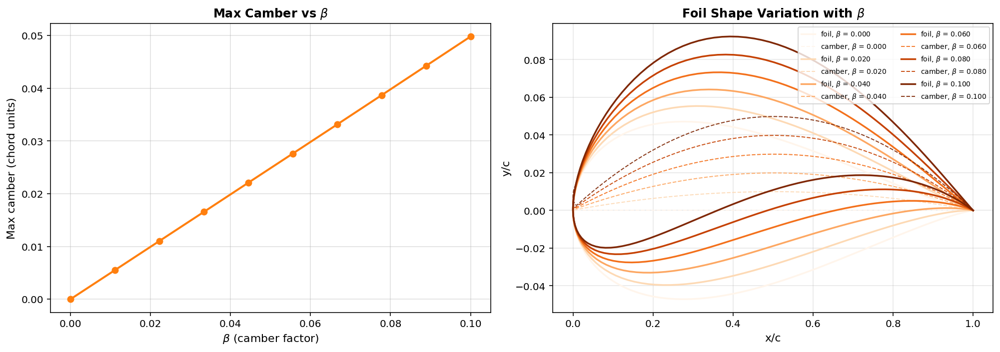
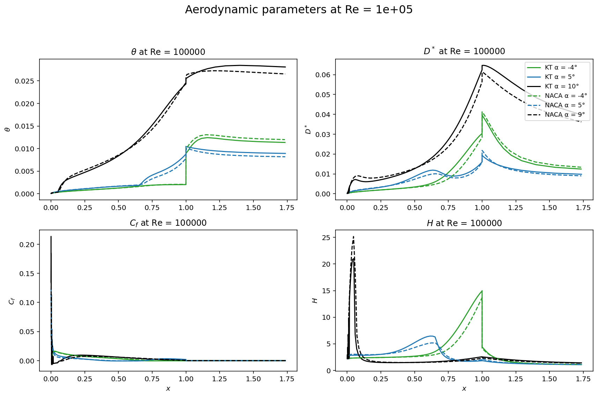

Coursework & Papers
Selected technical coursework from my MEng at the University of Southampton, with the full reports available to download. Each summary sets out the method applied and the results obtained.
Karman-Trefftz Aerofoil Analysis
This coursework generates an aerofoil by conformal mapping, analyses it using a panel method, and compares it against a standard NACA section in a viscous solver. My assigned parameters were a thickness factor of ε = 0.07, camber β = 0.07 and trailing-edge angle τ = 0.05.
Geometry generation
A Karman-Trefftz aerofoil is produced by mapping a circle in the complex plane onto an aerofoil section, with three parameters controlling thickness, camber and trailing-edge angle. I swept each parameter independently to establish its effect on the geometry, and extracted maximum thickness and camber, together with their chordwise positions, directly from the resulting coordinates.


Converting the resulting geometric values to the nearest standard designation identified the NACA 3509 as the closest equivalent section, which was then used as the benchmark for comparison. The two sections share a similar global thickness distribution but differ at the leading and trailing edges, which follows from the way the conformal mapping closes the trailing edge.
Panel method and viscous comparison
I implemented a doublet panel method in Python to estimate lift, and used it to carry out an order-of-accuracy study against panel count together with a comparison of cosine and uniform panel spacing. Cosine spacing concentrates panels where the geometry changes most rapidly, and converges more quickly for a given panel count.
The two aerofoils were then compared in XFOIL across angle of attack, Reynolds number and transition criterion, examining boundary layer behaviour in addition to the force coefficients.

Download the full report (PDF)
Minimum-Length Supersonic Nozzle by the Method of Characteristics
The method of characteristics solves supersonic flow by following the lines along which information propagates. This coursework applies it to design the shortest nozzle capable of accelerating a flow to a target Mach number without generating shocks.
My assigned case was M_des = 2.3 in helium, giving γ = 1.667 rather than the more familiar 1.4, which alters the Prandtl-Meyer function and therefore every subsequent calculation.
The design begins at the expansion corner, where the wall turns outwards to expand the flow smoothly. I used five characteristic lines, each representing an expansion wave reflecting between the centreline and the wall. At each intersection the flow angle θ and Prandtl-Meyer angle ν are determined from the Riemann invariants of the two incoming characteristics, which gives the local Mach number and Mach angle. Tracing those lines outward produces the wall coordinates and hence the minimum nozzle length.
The length is a minimum because any shorter contour cannot cancel the expansion cleanly. The waves then reflect from the wall and coalesce into shocks, which is the outcome the method is intended to avoid.
Download the full report (PDF)
Wind Tunnel Testing of a NACA 0020 Aerofoil
Three linked wind tunnel experiments on a symmetric NACA 0020 section, reported together: surface pressure distribution against angle of attack, boundary layer development towards the trailing edge, and lift and drag on a finite half-wing.
The analysis centres on comparison. The measured results were assessed against thin aerofoil theory, against XFOIL and XFLR5, and against CFD, and a substantial part of the report explains the discrepancies between them: viscous effects not captured by inviscid theory, laminar to turbulent transition along the boundary layer, and the tip effects and induced drag that appear once the wing is finite rather than two-dimensional.
Determining which of four sources to rely on when they disagree, and justifying that judgement, is the element of experimental aerodynamics most directly applicable to a wind tunnel programme.
Download the full report (PDF)
Finite Element Analysis of a Wing Box
Structural analysis of an aircraft wing box in ANSYS Mechanical, comprising spars, ribs, skin and stringers, loaded for both a positive-g and a negative-g manoeuvre, with the requirement that no component yields.
The principal engineering content is in the meshing rather than the final stress value. I carried out a convergence study from approximately 24,000 to 1.9 million elements, tracking peak stress against solve time and memory usage. Peak stress varied by well under one percent across that range while computational cost increased by orders of magnitude, which is the justification for convergence testing: beyond a certain refinement the additional precision has no engineering value, and the appropriate decision is to stop refining and state why.
Report available on request. It is written on the university's assignment template, so it is not reproduced here.